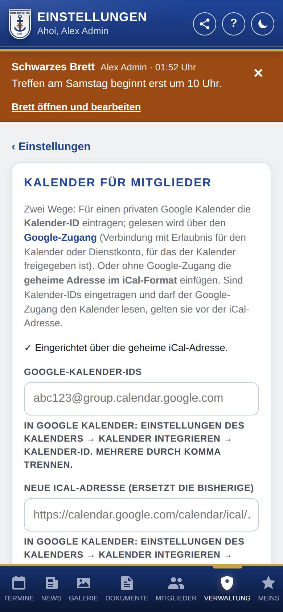
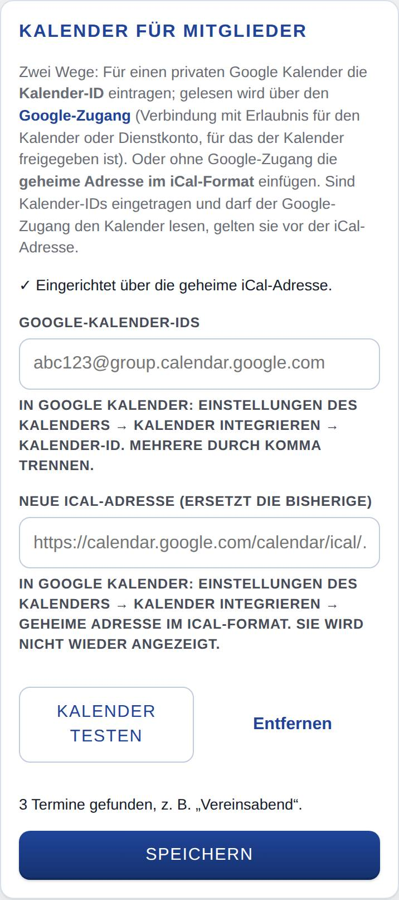

Kalender einrichten
Hier verbindest du den Kalender für Mitglieder mit eurem Google Kalender. Die App zeigt die Termine daraus angemeldeten Mitgliedern.

So öffnest du die Seite
Tippe unten auf Verwaltung, dann auf Einstellungen und auf Kalender. Im Einrichtungsassistenten steht derselbe Abschnitt im Schritt für den Kalender.
Was du hier siehst
- Kalender für Mitglieder: der Abschnitt mit einer kurzen Erklärung der beiden Wege.
- Eine Zeile, wie der Kalender gerade eingerichtet ist, z. B. ✓ Eingerichtet über die geheime iCal-Adresse. oder Noch kein Kalender eingerichtet.
- Google-Kalender-IDs: für den Weg über den Google-Zugang.
- Geheime iCal-Adresse (oder, wenn schon eine gespeichert ist, Neue iCal-Adresse (ersetzt die bisherige)): für den Weg ohne Google-Zugang.
- Kalender testen und Entfernen: erscheinen, sobald ein Kalender eingerichtet ist.
- Speichern: übernimmt die Eingaben.
So gehst du vor
Kalender über die geheime iCal-Adresse verbinden (ohne Google-Zugang)
- Öffne in Google Kalender beim Kalender der Kompanie ⋮ → Einstellungen und Freigabe und dort Kalender integrieren.
- Kopiere die Geheime Adresse im iCal-Format.
- Füge sie in der App bei Geheime iCal-Adresse ein und tippe auf Speichern.
Kalender über den Google-Zugang verbinden (auch für private Kalender)
- Richte zuerst den Google-Zugang ein. Bei „Mit Google verbinden“ muss dabei das Häkchen für Google Kalender gesetzt sein; ein Dienstkonto braucht eine Freigabe des Kalenders („Alle Termindetails sehen“).
- Kopiere in Google Kalender unter ⋮ → Einstellungen und Freigabe → Kalender integrieren die Kalender-ID. Beim Hauptkalender eines Kontos ist das dessen E-Mail-Adresse.
- Trage sie in der App bei Google-Kalender-IDs ein. Mehrere trennst du durch Komma.
- Tippe auf Speichern.
Prüfen, ob der Kalender ankommt
- Tippe auf Kalender testen.
- Die App zeigt, wie viele kommende Termine sie gefunden hat, z. B. „5 Termine gefunden, z. B. „Schützenfest“.“ Lehnt Google ab, nennt die Meldung die wahrscheinliche Ursache.

Den Kalender entfernen
- Tippe auf Entfernen und bestätige die Rückfrage. Alle Angaben zum Kalender werden gelöscht.
Gut zu wissen
- Die iCal-Adresse zeigt die App nach dem Speichern nicht wieder an. Eine neue Adresse ersetzt die bisherige.
- Sind Kalender-IDs eingetragen und darf der Google-Zugang den Kalender lesen, gelten sie vor der iCal-Adresse.
- Darf die Verbindung mit Google den Kalender nicht lesen, steht das auf dieser Seite und unter Zustand und Updates. Dann trennst du unter Google-Zugang die Verbindung und verbindest neu, mit dem Häkchen für den Kalender. Bis dahin gilt die iCal-Adresse, falls eingetragen.
- Der Kalender erscheint für die anderen erst, wenn der Bereich an und ein Kalender eingerichtet ist (siehe Bereiche).
- Mit WordPress gibt es dieselben Felder auch im WordPress-Backend auf der Seite der App (dort mit Speichern und testen), dazu ein Feld für einen eigenen Google-API-Schlüssel für öffentliche Kalender. Ist er eingetragen, geht er vor.